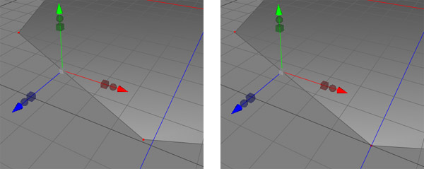

Quantize Tool
The Quantize Tool is used to snap the points of a polygon or spline to a grid that is user-definable. This is useful when a polygonobject, spline or other element has been created and transformed in a "freehand" manner, and you'd like the end result to align perfectly.

Two points of a polygon object. On the left, the points do not align to the grid.
On the right, the Quantize tool has been used to make the points align perfectly.
Modes


The quantize tool works in the Point, Edge, and Polygon modes, but always performs its operation on the coordinates of the points that make up the object you are editing.
Use
In order to quantize an object, you first must make it editable (see Polygonobject). Then simply chose Quantize from the Tools menu, pick which axis you want to quantize to, and type the raster values for each axis you'd like the points to be snapped to. Click on the OK button to apply the quantize. The default value for the quantize grid are 0.05 on all axis. Note that you do not have to use the same value for each axis (ie, you can force your points to snap in an oblong manner, rather than square)
Properties
- Quantize: When checked, the points will be quantized on that axis.
- Raster: The unit value that points on the selected axises will be snapped to. Defaults to 0.05.
- Apply: Click the OK button to apply the quantization to the selected points.